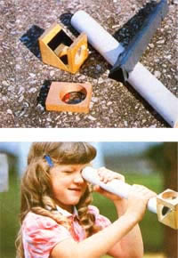
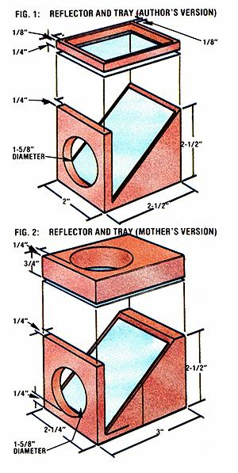

Here's a worthwhile project for anyone whose world has begun to look dull and "ordinary"!
Ever since 1816, when Sir David Brewster invented the kaleidoscope, this plaything has fascinated people of all ages with its dazzling displays of color and light. Using mirrors to reflect reflections (think about that!), the optical curiosity creates a seemingly infinite variety of symmetrical and geometrical patterns.
But unfortunately, even though these instruments are enjoying something of a resurgence in popularity these days, it's difficult to find a really well-made kaleidoscope at an affordable price. For the most part, commercial models are either shabbily constructed (the cheap, dime-store variety) or outrageously expensive (the ultra deluxe, handmade, crafts-boutique types).
To avoid having to make a choice between those two unsatisfactory alternatives, I decided to make my own kaleidoscope. A few hours later-after using only scrap (or low-cost) materials and some ordinary hand tools I'd put together a fine little mirrored viewer that performs just as impressively as most of the better store-bought models. In fact, my creation is superior to them in at least one important way: It's a dual-optic device. That is, you can use it with bits of colored glass or plastic to create classic kaleidoscopic patterns . . or you can point the tube at a 90° angle to any object-a bumblebee, a street sign, or whatever-to produce unique designs from the world around you.
Four major components make up my kaleidoscope:
[1] A viewing tube: For this, I used a 13" length of 1-1/2" PVC pipe (which has an outer diameter of 1-5/8"). You could use cardboard tubing of the same diameter instead, but I chose PVC because it's inexpensive, easy to find, and very durable (cardboard kaleidoscopes tend to get soggy in the rain!).
[2] Mirrors or other reflective material: These, of course, are at the heart of any kaleidoscope. To reproduce my version, you'll need three 1" X 12" strips of mirror and another piece (for the reflector component described below) measuring 2" X 2-3/8". You can recycle an old mirror for this purpose (use a good glass cutter-and great care-when doing so). Or you can buy the material from a glass or tile shop (chances are you'll have to purchase a 12" square-the minimum size many stores stock-and either cut the pieces yourself or have the storekeeper do it).
Now, place the three I " strips together, long edge to long edge, to form a triangular column (with the shiny surfaces facing in ward). Wrap the joined mirrors firmly with masking (or duct) tape, and slip the assembly into the PVC pipe. If the mirrors slide easily in and out of the tube, pad the outside of the wrapped glass with additional tape until the fit is snug but not tight.
When you look into your yet-to-be completed design-maker, it'll seem as though you're peering through an almost circular tunnel full of reflected triangles. And; regardless of what you place in front of the viewer to produce color or texture, this repeating pattern will always be the core o1 your scope's displays. (Incidentally, you can also make a model that casts square facets, by taping four 7/8" X 12" mirror strips together at right angles to produce a boxlike rather than triangular-insert.)
As you gaze through the scope, you may notice that it's hard to focus your eyes simultaneously on both the object and the reflections if the thing you're viewing is relatively distant from the end of the pipe. To solve this problem, you need to bring the object closer to the inner mirrors . . . and that's the job of the next component.
[3] The reflector: This is the "extra" part that gives this toy its ability to be used as a dualoptic kaleidoscope. When I worked on this component (see Fig. 1) for my viewer, I started by cutting a block measuring 2" X 2-1/2" X 21/2" from an old chunk of 2" X 4" lumber (those were the stock's true dimensions). But the fact is, this is one of those cases where you can likely make do with whatever wood you have on hand.
(EDITOR'S NOTE: For example, MOTH ER's woodworkers-lacking a piece of "honest" 2" X 4" lumber-improvised by cutting two 21/2" lengths of commercial 2 X 4 (which actually measures 1-1/2" X 3-1/2') to a uniform 2-1/4" width, and then gluing the two back to back to produce a block that was 2-1/4" X 2-1/2" X 3" (see Fig. 2) . . . a piece somewhat larger than the one the author used, but which-when fitted with a correspondingly bigger mirror-was perfectly acceptable.
Once you've cut the block to size, bore a 15/8"-diameter hole at least 1/4" into the wood, as shown in Fig. 1. It's best to use a drill with a plug-cutter bit for this job, so chat you can use the resulting cut-out disk when making the scope's eyepiece. (A spade bit will drill a fine cavity, too, but won't give you a ready-made plug.)
Now, saw a triangular section out of the block (see Fig. 1), first cutting straight down to intersect the hole-opening the "inside" end of that bore-ending about 1/4" from the bottom of the block. Then make another cut to form a 45 ° incline from the base of the perpendicular "wall" to the top of the block.
Next, glue the 2" X 2-3/8" mirror (or whatever size reflector is appropriate to the dimensions of your base) to the incline. Fit the completed component to one end of the tube (you might have to file or sand the wood or the pipe to make the parts compatible), and fashion an eyepiece for the other end. If you used a hole cutter when you were making the base, drill a 1/4" opening into the center of the left over plug. If you didn't, bore a 1/4" cavity into a 1-1/2"diameter PVC pipe cap. Then slip the plug into place and fasten it with brads (in the case of a wooden eyepiece) or glue (if you used a PVC cap).
When you've done that, take another look through your viewer. As you can see, you've created an instrument that produces a dazzling multifaceted image of . . . well, of whatever you choose to peek at. To give your kaleidoscope its second dual-optic property the ability to create kaleidoscopic designs from bits of colored glass and such-you'll need to make another simple attachment.
[4] The object tray: This is nothing more than a block of wood, with a "window" in it, which rests atop the reflector and holds items for viewing. If you're making your scope to the same dimensions as mine, take a 2" X 2-I/2" piece of 1/4" plywood and using a coping or jigsaw-cut a rectangular area out of the piece, as shown in Fig. 1. Then glue or tape a 2" X 21/2" piece of stiff, clear plastic (such as acetate film) over one side of the opening, and-presto!--you'll have the final component for your kaleidoscope.
To hold the tray in place-but also make it easily removable-all you have to do is tape it to the reflector, or wrap a rubber band around the two parts . . . or, to produce a more deluxe setup (as well as one that is more attractive), work out some kind of arrangement that uses strips of self adhering fabric fasteners. [EDITOR'S NOTE: As the photos and Fig. 2 show, we made the window for our object tray by drilling a 1-5/8"-diameter hole in the area that would be directly over the mirror. We then glued self-adhering fasteners to the underside of the tray and to the top of the reflector, in order to "marry" the two components.]
Of course, the patterns your kaleidoscope produces will be determined by the kinds of things you place in the tray . . . so have fun experimenting with various objects. For "classic" scope designs, use bits of colored glass, plastic, or aquarium gravel. But don't let your imagination stop there: Paper clips, flower petals, safety pins, dried peas or beans, and "alphabet" macaroni are just a few examples of ordinary household items that can be elevated to the realm of the extraordinary when viewed through your scope.
Incidentally, you may want to affix a clear plastic flap over the other side of the tray's window, to keep the objects from falling out. And if you come up with a particularly pleasing combination of items, you might elect to attach the cover permanently . . . and then make a second tray for temporary displays.
I think you'll find, as you explore your viewer's potential, that the instrument is capable of producing an all but endless array of patterns and color schemes. That's why, in fact, kaleidoscopes have been used for many years as design tools in the carpet and textile industries. But perhaps the real value of Sir David Brewster's invention is its inherent ability simply to entertain people, and to remind us that beauty can be found even in many seemingly "commonplace" things . . . if only we take the time to look for it.
|
 |
 |
|